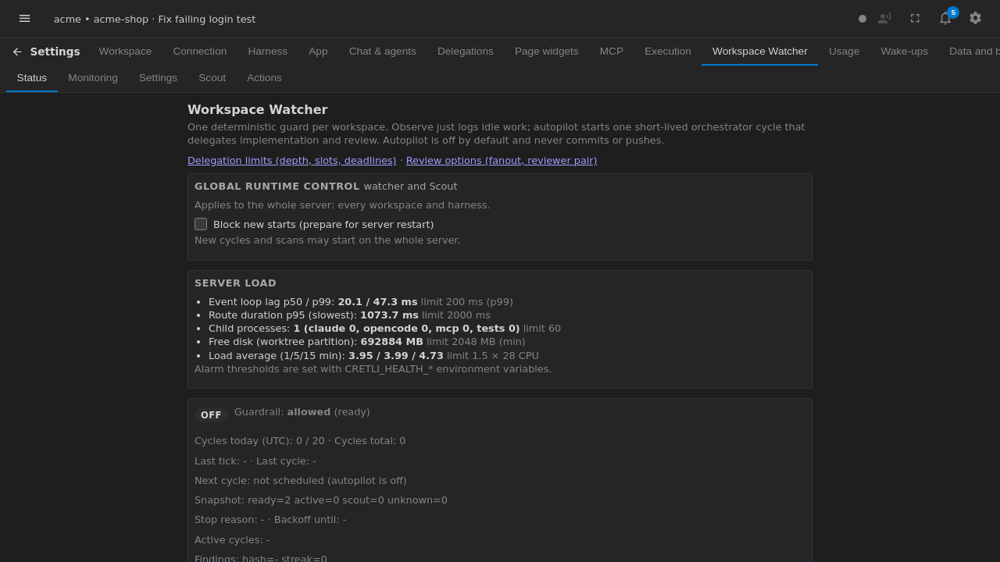

Workspace Watcher
Watcher checks a workspace for ready work and coordinates bounded execution cycles. Configure it in Settings → Workspace Watcher after choosing harnesses, models, and a policy for your workspace.
Choose a mode
- off: the scheduling tick does nothing and starts no work.
- observe: records decisions and can notify you that work is waiting; it does not start task execution agents.
- autopilot: can start eligible work within the configured budgets, concurrency limits, quiet hours, and approval requirements.
Optional Scout and feedback features have their own settings. Inspect those separately when deciding which background activity to allow.
What a cycle does
Watcher checks tasks, live chats, and available capacity, reserves a task, and starts an orchestrator chat for one cycle. That chat coordinates implementation, independent review, and any required fixes. It reports the result before the cycle releases its slot. Human plan approval remains required wherever the workspace policy demands it: Watcher never approves plans.
Open the task report and the Watcher's decision view when work waits. A missing credential, an earlier sibling, a budget, or a human decision can explain the delay. After a server restart, Cretli reconciles interrupted cycles rather than blindly starting duplicates.
Integration and restart
Automatic integration is off by default. With explicit workspace opt-in, independently verified work can be tested and integrated as a local commit. Conflicts or failed checks stop integration; unrelated local changes are preserved. Without opt-in, finished work awaits the integration action.
After integration, Cretli can coordinate a server restart for affected runtime changes, waiting for active cycles to drain. If frontend and backend changed together, it builds the frontend before requesting restart; a failed build skips restart. Inspect failures before resuming automation. Watcher never pushes changes to a remote repository.
